전산응용기계제도기능사 (2015-01-25 기출문제)
1과목: 기계재료 및 요소
1. 가단주철의 종류에 해당하지 않는 것은?
- 흑심 가단주철
- 백심 가단주철
- 오스테나이트 가단주철
- 펄라이트 가단주철
(정답률: 57%)

2. 비자성체로서 Cr과 Ni를 함유하며 일반적으로 18-8 스테인리스강이라 부르는 것은?
- 페라이트계 스테인리스강
- 오스테나이트계 스테인리스강
- 마텐자이트계 스테인리스강
- 펄라이트계 스테인리스강
(정답률: 66%)
3. 8~12% Sn에 1~2% Zn의 구리합금으로 밸브, 콕, 기어, 베어링, 부시 등에 사용되는 합금은?
- 코르손 합금
- 베릴륨 합금
- 포금
- 규소 청동
(정답률: 54%)
4. 주철의 여러 성질을 개선하기 위하여 합금 주철에 첨가하는 특수원소 중 크롬(Cr)이 미치는 영향이 아닌 것은?
- 경도를 증가시킨다.
- 흑연화를 촉진시킨다.
- 탄화물을 안정시킨다.
- 내열성과 내식성을 향상 시킨다.
(정답률: 71%)
5. 다이캐스팅 알루미늄 합금으로 요구되는 성질 중 틀린 것은?
- 유동성이 좋을 것
- 금형에 대한 점착성이 좋을 것
- 열간 취성이 적을 것
- 응고수축에 대한 용탑 보급성이 좋을 것
(정답률: 68%)
6. 탄소강의 경도를 높이기 위하여 실시하는 열처리는?
- 불림
- 풀림
- 담금질
- 뜨임
(정답률: 84%)
7. 고용체에서 공간격자의 종류가 아닌 것은?
- 치환형
- 침입형
- 규칙 격자형
- 연심 입방 격자형
(정답률: 50%)
8. 브레이크 드럼에서 브레이크 블록에 수직으로 밀어 붙이는 힘이 1000N 이고 마찰계수가 0.45 일 때 드럼의 접선방향 제동력은 몇 N 인가?
- 150
- 250
- 350
- 450
(정답률: 77%)
9. 지름 D1 = 200mm, D2 = 300mm의 내접 마찰차에서 그 중심 거리는 몇 mm인가?
- 50
- 100
- 125
- 250
(정답률: 41%)
10. 기어 전동의 특징에 대한 설명으로 가장 거리가 먼 것은?
- 큰 동력을 전달한다.
- 큰 감속을 할 수 있다.
- 넓은 설치장소가 필요하다.
- 소음과 진동이 발생한다.
(정답률: 72%)
2과목: 기계가공법 및 안전관리
11. 미터나사에 관한 설명으로 틀린 것은?
- 기호는 M으로 표기한다.
- 나사산의 각도는 55° 이다.
- 나사의 지름 및 피치를 mm로 표시한다.
- 부품의 결합 및 위치의 조정 등에 사용된다.
(정답률: 82%)
12. 평벨트의 이용방법 중 효율이 가장 높은 것은?
- 이음쇠 이름
- 가죽 끈 이름
- 관자 볼트 이음
- 접착제 이음
(정답률: 58%)
13. 축 방향으로 인장하중만을 받는 수나사의 바깥지름(d)과 볼트재료의 허용인장응력(δα) 및 인장하중(W)과의 관계가 옳은 것은?(단, 일반적으로 지름 3mm 이상인 미터나사이다.)
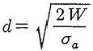
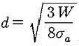
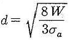
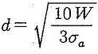
(정답률: 51%)
14. 전단하중에 대한 설명으로 옳은 것은?
- 재료를 축 방향으로 잡아당기도록 작용하는 하중이다.
- 재료를 축 방향으로 누르도록 작용하는 하중이다.
- 재료를 가로 방향으로 자르도록 작용하는 하중이다.
- 재료가 비틀어지도록 작용하는 하중이다.
(정답률: 61%)
15. 베어링의 호칭번호가 62⑤ 인 레이디얼 볼 베어링의 안지름은?
- 5 mm
- 25 mm
- 62 mm
- 2⑤ mm
(정답률: 87%)
16. 지름이 30 mm인 연강을 선반에서 절삭할 때, 주축을 200 rpm으로 회전시키면 절삭속도는 약 몇 m/min인가?
- 10.54
- 15.48
- 18.84
- 21.54
(정답률: 63%)
17. 여러 개의 절삭 날을 일직선상에 배치한 절삭공구를 사용하여 1회의 통과로 구멍의 내면을 가공하는 공작 기계는?
- 세이퍼
- 슬로터
- 브로칭 머신
- 플레이너
(정답률: 70%)
18. 밀링 머신의 일반적인 크기 표시는?
- 밀링 머신의 최고 회전수로 한다.
- 밀링 머신의 높이로 한다.
- 테이블의 이송거리로 한다.
- 깍을 수 있는 공작물의 최대 길이로 한다.
(정답률: 56%)
19. 정밀 보링머신의 특성에 대한 설명으로 틀린 것은?
- 고속회전 및 정밀한 이송기구를 갖추고 있다.
- 다이아몬드 또는 초경합금 공구를 사용한다.
- 진직도는 높으나 진원도가 낮다.
- 실린더나 베어링면 등을 가공한다.
(정답률: 70%)
20. 드릴 가공방법에서 구멍에 암나사를 가공하는 작업은?
- 다이스 작업
- 탭핑 작업
- 리밍 작업
- 보링 작업
(정답률: 67%)
21. 연삭숫돌에 눈 메움이나 무딤 현상이 발생하였을 때 숫돌을 수정하는 작업은?
- 래핑
- 드레싱
- 글레이징
- 덮개 설치
(정답률: 68%)
22. 선반가공에서 가공면의 미끄러짐을 방지하기 위하여 요철형태로 가공하는 것은?
- 내경 절삭가공
- 외경 절삭가공
- 널링 가공
- 보링 가공
(정답률: 70%)
23. 선반 작업 중에 지켜야 할 안전사항이 아닌 것은?
- 긴 공작물을 가공할 때는 안전장치를 설치 후 가공한다.
- 가공물이 긴 경우 심압대로 지지하고 가공한다.
- 드릴 작업시 시작과 끝은 이송을 천천히 한다.
- 전기배선의 절연상태를 점검한다.
(정답률: 62%)
24. 구성인선의 방지 대책 중 틀린 것은?
- 윤활성이 좋은 절삭 유제를 사용한다.
- 공구의 윗면 경사각을 크게 한다.
- 절삭 깊이를 크게 한다.
- 고속으로 절삭한다.
(정답률: 61%)
25. 전기 도금과는 반대로 일감을 양극으로 하여 전기에 의한 화학적 용해작용을 이용하고 가공물의 표면을 다듬질하여 광택이 나게 하는 가공법은?
- 기계 연마
- 전해 연마
- 초음파 가공
- 방전 가공
(정답률: 69%)
3과목: 기계제도
26. 다음 도면에서 표현된 단면도로 모두 맞는 것은?
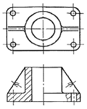
- 전단면도, 한쪽 단면도, 부분 단면도
- 한쪽 단면도, 부분 단면도, 회전도시 단면도
- 부분 단면도, 회전도시 단면도, 계단 단면도
- 전단면도, 한쪽 단면도, 회전도시 단면도
(정답률: 62%)
27. 정투상도 1각법과 3각법을 비교 설명한 것으로 틀린 것은?
- 3각법에서는 저면도는 정면도의 아래에 나타낸다.
- 1각법은 평면도를 정면도의 바로 아래에 나타낸다.
- 1각법에서는 정면도 아래에서 본 저면도를 정면도 아래에 나타낸다.
- 3각법에서 측면도는 오른쪽에서 본 것을 정면도의 바로 오른쪽에 나타낸다.
(정답률: 67%)
28. 아래 투상도는 제 3각법으로 투상한 것이다. 이물체의 등각 투상도로 맞는 것은?
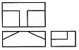
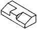
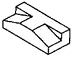
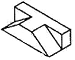
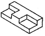
(정답률: 85%)
29. 치수 배치 방법 중 치수공차가 누적되어도 좋은 경우에 사용하는 방법은?
- 누진치수기입법
- 직렬치수기입법
- 병렬치수기입법
- 좌표치수기입법
(정답률: 57%)
30. 여러 각도로 기울어진 면의 치수를 기입할 때 일반적으로 잘못 기입된 치수는?
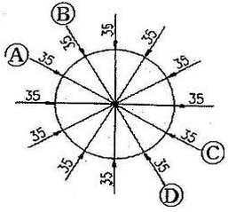
- A
- B
- C
- D
(정답률: 83%)
31. ø50H7의 구멍에 억지 끼워 맞춤이 되는 축의 끼워 맞춤 공차 기호는?
- ø50js6
- ø50f6
- ø50g6
- ø50p6
(정답률: 70%)
32. 대상 면을 지시하는 기호 중 제거 가공을 허락하지 않는 것을 지시하는 것은?(오류 신고가 접수된 문제입니다. 반드시 정답과 해설을 확인하시기 바랍니다.)
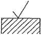
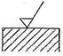
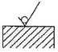
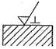
(정답률: 80%)
33. 스케치도를 작성할 필요가 없는 경우는?
- 제품 제작을 위해 도면을 복사할 경우
- 도면이 없는 부품을 제작하고자 할 경우
- 도면이 없는 부품이 파손되어 수리 제작할 경우
- 현품을 기준으로 개선된 부품을 고안하려 할 경우
(정답률: 72%)
34. 기하 공차의 기호 중 진원도를 나타낸 것은?
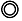
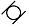
(정답률: 73%)
35. 도면에 기입된 공차도시에 관한 설명으로 틀린 것은?
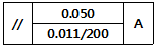
- 전체 길이는 200 mm 이다.
- 공차의 종류는 평행도를 나타낸다.
- 지정 길이에 대한 허용 값은 0.011 이다.
- 전체 길이에 대한 허용 값은 0.⑤0 이다.
(정답률: 60%)
36. 다음 중 억지끼워맞춤 또는 중간끼워맞춤에서 최대 죔새를 나타내는 것은?
- 구멍의 최대 허용 치수 - 축의 최소 허용 치수
- 구멍의 최대 허용 치수 - 축의 최대 허용 치수
- 축의 최소 허용 치수 - 구멍의 최대 허용 치수
- 축의 최대 허용 치수 - 구멍의 최소 허용 치수
(정답률: 68%)
37. 치수 기입의 일반적인 원칙에 대한 설명으로 틀린 것은?
- 치수는 되도록 공정마다 배열을 분리하여 기입할 수 있다.
- 관계된 치수를 명확히 나타내기 위해 치수를 중복하여 나타낼 수 있다.
- 대상물의 기능, 제작, 조립 등을 고려하여 필요하다고 생각되는 치수를 명료하게 도면에 지시한다.
- 도면에 나타내는 치수는 특별히 명시하지 않는 한 그 도면에 도시한 대상물의 다듬질 치수를 도시한다.
(정답률: 74%)
38. 보조 투상도의 설명 중 가장 옳은 것은?
- 복잡한 물체를 전단하여 그린 투상도
- 그림의 특정 부분만을 확대하여 그린 투상도
- 물체의 경사면에 대향하는 위치에 그린 투상도
- 물체의 홈, 구멍 등 투상도의 일부를 나타낸 투상도
(정답률: 57%)
39. 가고에 의한 커너의 줄무늬 방향이 다음과 같이 생길 경우 올바른 줄무늬 방향 기호는?
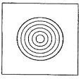
- C
- M
- R
- X
(정답률: 76%)
40. 다음 중 물체의 이동 후의 위치를 가상하여 나타내는 선은?
(정답률: 66%)
41. 2개의 면이 교차 부분을 표시할 때 “R1 = 2×R2" 인 평면도의 모양으로 가장 적합한 것은?
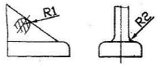
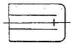
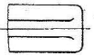
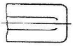
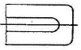
(정답률: 54%)
42. 도면의 양식 중에서 반드시 마련해야 하는 사항이 아닌 것은?
- 표제란
- 중심 마크
- 윤곽선
- 비교 눈금
(정답률: 76%)
43. 입체도에서 정투상도의 정면으로 옳은 것은?
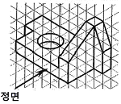
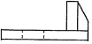
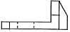
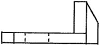
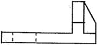
(정답률: 79%)
44. 도면이 구비하여야 할 요건이 아닌 것은?
- 국제성이 있어야 한다.
- 적합성, 보편성을 가져야 한다.
- 표현상 명확한 뜻을 가져야 한다.
- 가격, 유통체제 등의 정보를 포함하여야 한다.
(정답률: 84%)
45. 파선의 용도 설명으로 맞는 것은?
- 치수를 기입하는데 사용된다.
- 도형의 주심을 표시하는데 사용된다.
- 대상물의 보이지 않는 부분의 모양을 표시한다.
- 대상물의 일부를 파단한 경계 또는 일부를 떼어낼 경계를 표시한다.
(정답률: 48%)
46. 축에 빗줄로 널링(knurling)이 있는 부분의 도시방법으로 가장 올바른 것은?
- 널링부 전체를 축선에 대하여 45° 로 엇갈리게 동일한 간격으로 그린다.
- 널링부의 일부분만 축선에 대하여 45° 로 엇갈리게 동일한 간격으로 그린다.
- 널링부 전체를 축선에 대하여 30° 로 동일한 간격으로 엇갈리게 그린다.
- 널링부의 일부분만 축선에 대하여 30° 로 엇갈리게 동일한 간격으로 그린다.
(정답률: 42%)
47. 스프로킷 휠의 도시방법에 대한 설명 중 옳은 것은?
- 스프로킷의 이끝원은 가는 실선으로 그린다.
- 스프로킷의 피치원은 가는 2점 쇄선으로 그린다.
- 스프로킷의 이뿌리원은 가는 실선으로 그린다.
- 축의 직각 방향에서 단면도를 도시할 때 이뿌리선은 가는 실선으로 그린다.
(정답률: 59%)
48. 다음 중 평면 캠의 종류가 아닌 것은?
- 판 캠
- 정면 캠
- 구형 캠
- 직선운동 캠
(정답률: 63%)
49. 운전 중 결합을 끊을 수 없는 영구적인 축이음을 아래 단어중에서 모두 고른 것은?
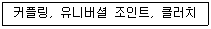
- 커플링, 유니버셜 조인트
- 커플링, 클러치
- 유니버셜 조인트, 클러치
- 커플링, 유니버셜 조인트 클러치
(정답률: 62%)
50. 미터 사다리꼴나사 [ Tr 40×7 LH ]에서 'LH‘가 뜻하는 것은?
- 피치
- 나사의 등급
- 리드
- 왼나사
(정답률: 71%)
51. 볼트의 골 지름을 제도할 때 사용하는 선의 종류로 옳은 것은?
- 굵은 실선
- 가는 실선
- 숨은선
- 가는 2점쇄선
(정답률: 61%)
52. 스퍼기어 표준 치형에서 맞물림 기어의 피니언 잇수가 16, 기어 잇수가 44 일 때 축 중심간의 거리로 옳은 것은?(단, 모듈이 5 이다.)
- 120 mm
- 150 mm
- 200 mm
- 300 mm
(정답률: 59%)
53. 테이퍼 핀 1급 4×30 SM50C“ 의 설명으로 맞는 것은?
- 테이퍼 핀으로 호칭 지름이 4 mm, 길이가 30 mm, 재료가 SM50C 이다.
- 테이퍼 핀으로 최대 지름이 4 mm, 길이가 30 mm, 재료가 SM50C 이다.
- 테이퍼 핀으로 핀의 평균 지름이 40 mm, 길이가 30 mm, 재료가 SM50C 이다.
- 테이퍼 핀으로 구멍의 지름이 4 mm, 길이가 30 mm, 재료가 SM50C 이다.
(정답률: 68%)
54. 배관을 도시할 때 관의 접속 상태에서 ‘접속하고 있을 때 - 분기 상태’를 도시하는 방법으로 옳은 것은?
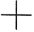
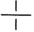
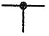
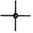
(정답률: 56%)
55. 축에 작용하는 하중의 방향이 축 직각 방향과 축 방향에 동시에 작용하는 곳에 가장 적합한 베어링은?
- 니들 롤러 베어링
- 레이디얼 볼 베어링
- 스러스트 볼 베어링
- 테이퍼 롤러 베어링
(정답률: 31%)
56. 다음 그림과 같은 용접점을 용접기호로 바르게 나타낸 것은?
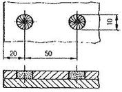
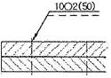
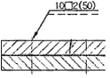
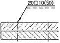
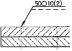
(정답률: 51%)
57. 서피스(surface) 모델링에서 곡면을 절단하였을 때 나타내는 요소는?
- 곡선
- 곡면
- 점
- 면
(정답률: 55%)
58. 컴퓨터의 기억용량 단위인 비트(bit)의 설명으로 틀린 것은?
- binary digit의 약자이다.
- 정보를 나타내는 가장 작은 단위이다.
- 전기적으로 처리하기가 아주 편리하다.
- 0과 1일 동시에 나타내는 정보 단위이다.
(정답률: 59%)
59. CAD 시스템에서 마지막 입력 점을 기준으로 다음 점까지의 직선거리와 기준 직교축과 그 직선이 이루는 각도를 입력하는 좌표계는?
- 절대 좌표계
- 구면 좌표계
- 원통 좌표계
- 상대 극좌표계
(정답률: 74%)
60. 다음 중 주변기기를 기능별로 묶어진 것으로, 그 내용이 잘못된 것은?
- 키보드, 마우스, 조이스틱
- 프린터, 플로터, 스캐너
- 자기디스크, 자기드럼, 자기테이프
- 라이트 펜, 디지타이저, 테이프리더
(정답률: 60%)